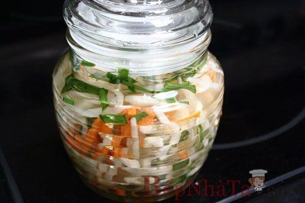

Cùng bắt tay làm thử thôi nào!
Nguyên liệu:
- 300g giá
- 1 củ cà rốt
- Ít nhánh hẹ
- Muối, đường, giấm
- Ớt, tỏi.
Cách làm:
- Cà rốt thái sợi.
- Để giá, hẹ, cà rốt sau khi rửa lên rổ cho ráo nước.
- Tỏi thái nhỏ.
- Ớt thái chỉ.
- Pha ba thìa canh đường, hai thìa nhỏ muối, một thìa nhỏ giấm và bốn thìa canh nước lọc, khuấy để đường tan. Nêm hơi chua chua ngọt ngọt và vừa.
- Hẹ thái nhỏ, trộn cà rốt, dưa giá vào với nhau.
- Xếp hỗn hợp giá và hẹ vào hủ thủy tinh sạch, chế hỗn hợp nước giấm pha vào.
- Nếu hỗn hợp nước giấm chưa đủ để ngập mặt giá, bạn pha thêm ít nước lọc vào.
- Đậy kín nắp, để nơi thoáng, khoảng 1 ngày là dùng được.
Pha đường với muối, giấm và nước lọc.
Thái nhỏ tỏi, ớt.
Trộn đều giá với cà rốt và hẹ.
Cho hỗn hợp rau củ vào hũ cùng với nước chua ngọt đã pha.
Đậy kín nắp, để 1 ngày là dùng được.